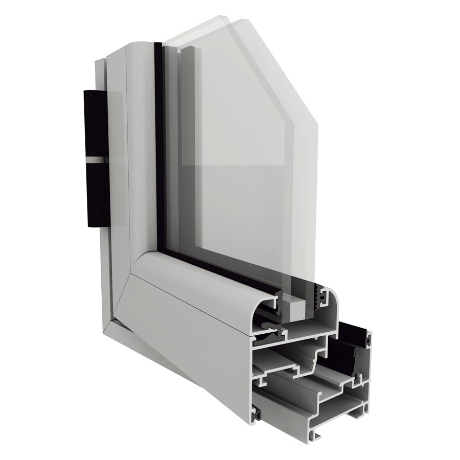
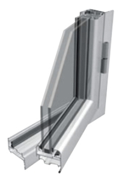

Linea Herrero
Es un sistema mediano, el más tradicional en el mercado actual de aberturas, con un sistema de cierre central manual. El sistema mediano posee un tipo de perfil que contiene menos espesor que las demás líneas, pero con la misma calidad.

Linea Modena
Es un sistema mediano de alta prestación inspirada en formas y estéticas europeas. Se logran aberturas de excelente hermeticidad por la interacción entre los perfiles, cuyos bordes pueden ser rectos o redondeados.

Linea A30
Es un sistema de carpintería de alta gama que gracias a la fortaleza de sus perfiles, la gran eficiencia en hermeticidad, aislación termo-acústica y su línea de diseño, dan como resultado un producto de gran calidad y performance.